本书作者：测试开发刚哥，文章版权归个人所有，未经授权请勿转载。
PyCharm 是什么
PyCharm（读作“拍恰姆”）是 JetBrains 全家桶中的一员，专门用来写 Python 的：
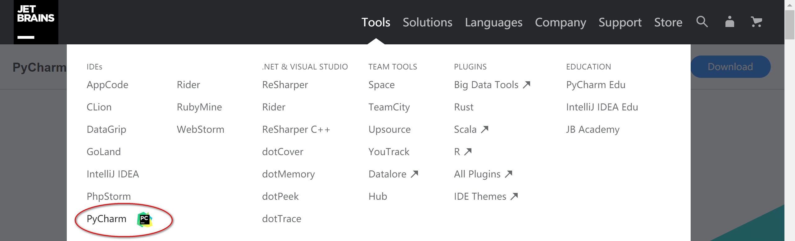
官方网址是：
https://www.jetbrains.com/pycharm/
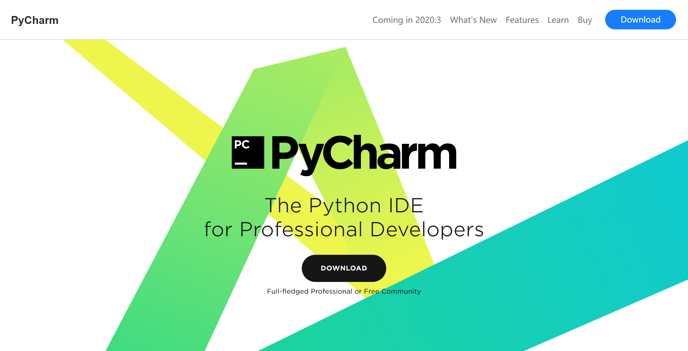
for Professional Developers，顾名思义，它是为专业开发者而生的。
版本选择
PyCharm 有 2 个版本：
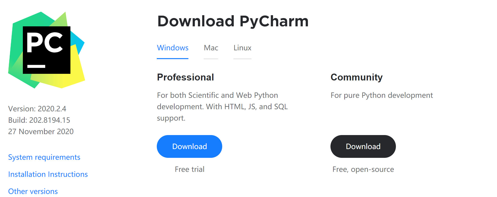
左边的 Professional 是专业版，需要付（ po ）费（ jie ）。右边的 Community 是社区版，永久免费。一般社区版够用了。我用的是专业版，看着齐全。
打开 PyCharm
安装完成后，打开：
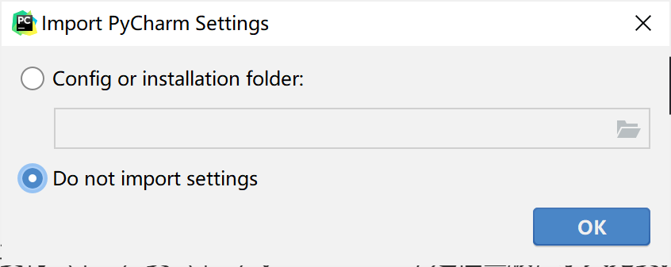
不需要导入配置，点击 OK 按钮：
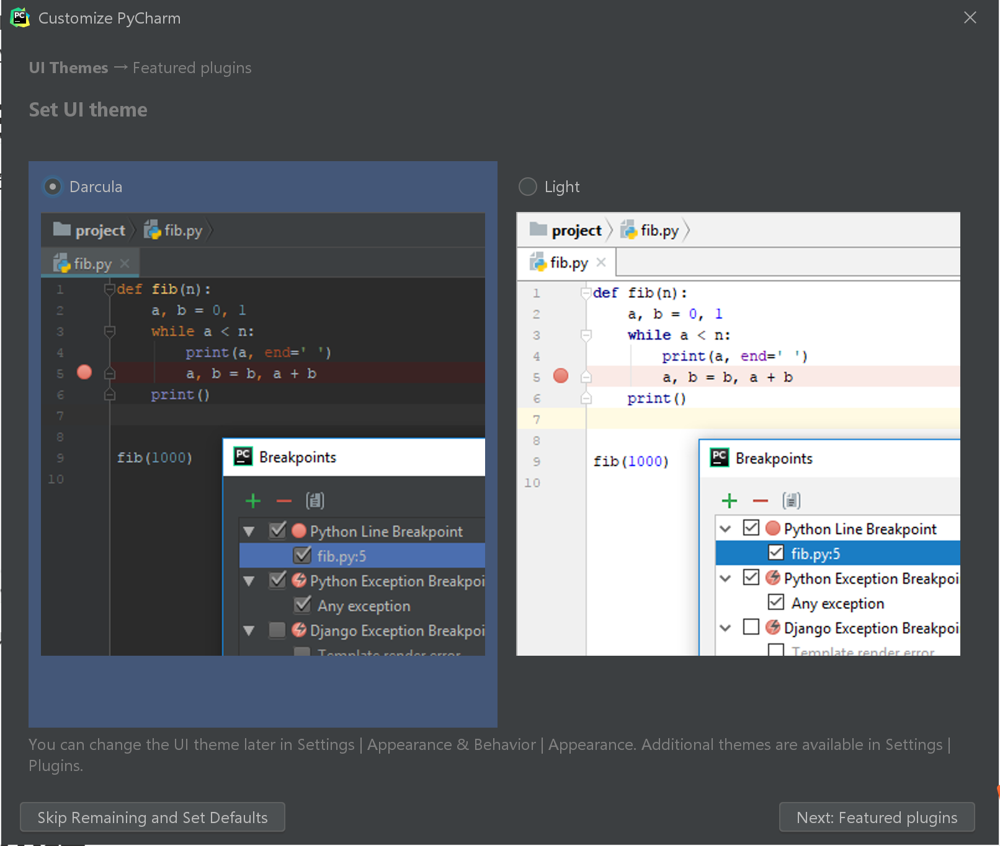
有 2 个主题，个人偏好左边这种，酷酷的。点击左下角 Skip Remaining and Set Defaults 跳过插件安装，进入主界面（专业版破解后才能看到这个界面，具体破解方法网上贼多）：
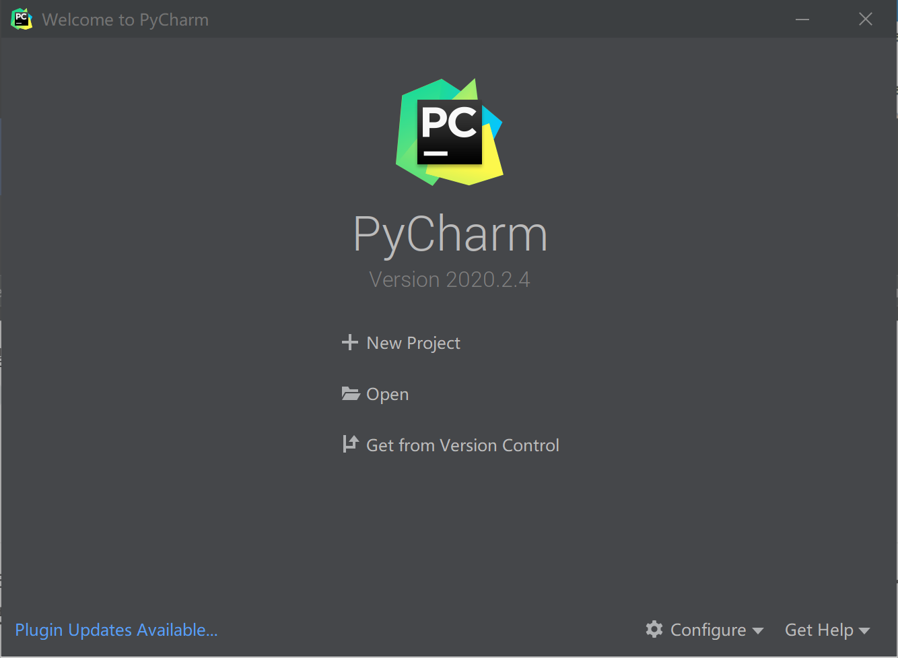
首次打开，还没有创建项目，会出现引导页。选择 New Project：
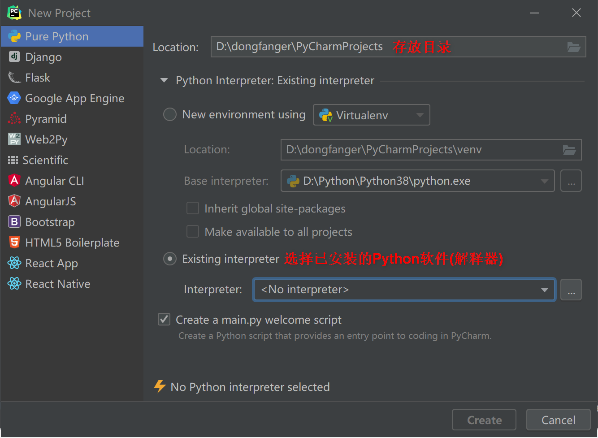
这是专业版的界面，社区版会简略一点。选择好存放目录后，还需要配置解释器。点击解释器右边的 ... ，切换到 System Interpreter，选择已经安装好的 Python：
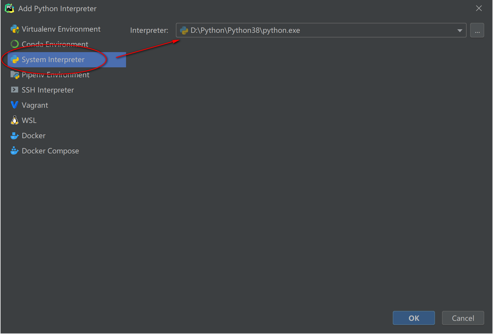
OK 后再点击 Create，来了：
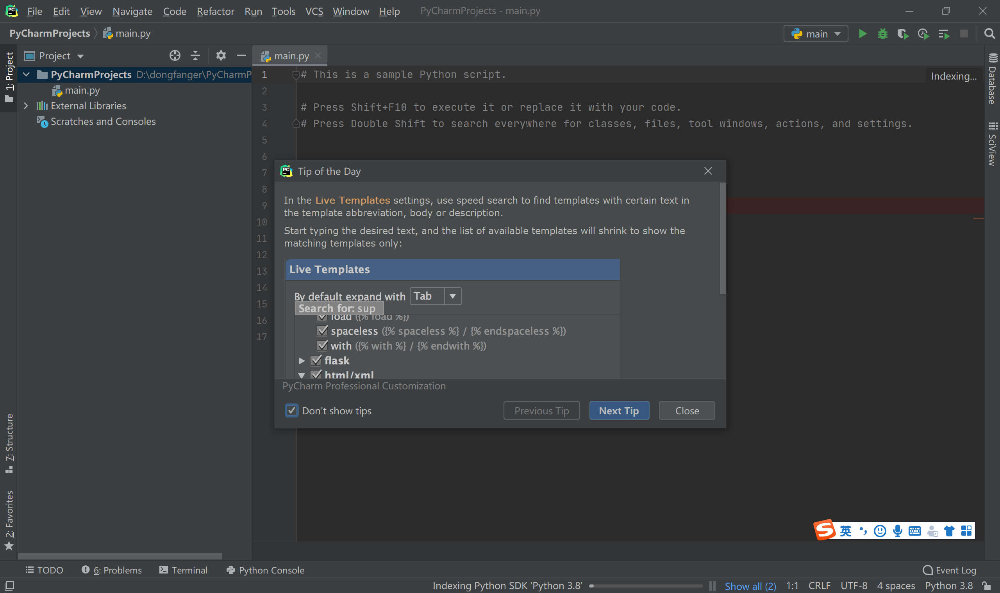
老手可以勾选 Tip of the Day 左小角 Don't show tips。
界面说明一张图
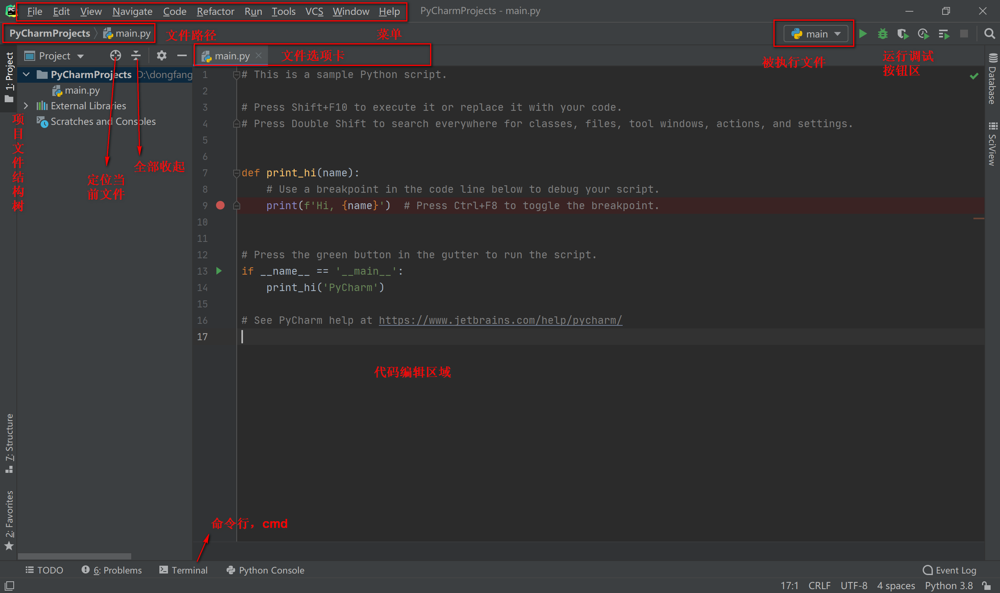
运行结果
右上角的按钮区可以点击运行，代码编辑区域的行号那如果出现了绿色小箭头，也可以点击运行，甚至是代码编辑区里面右键，文件名右键，都可以运行！看看 PyCharm 想的多周到，生怕你不会运行。运行后结果会从下方弹出来：
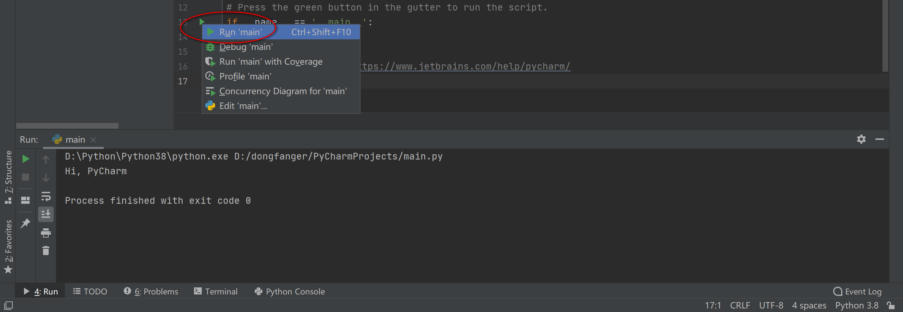
防止中文乱码两张图
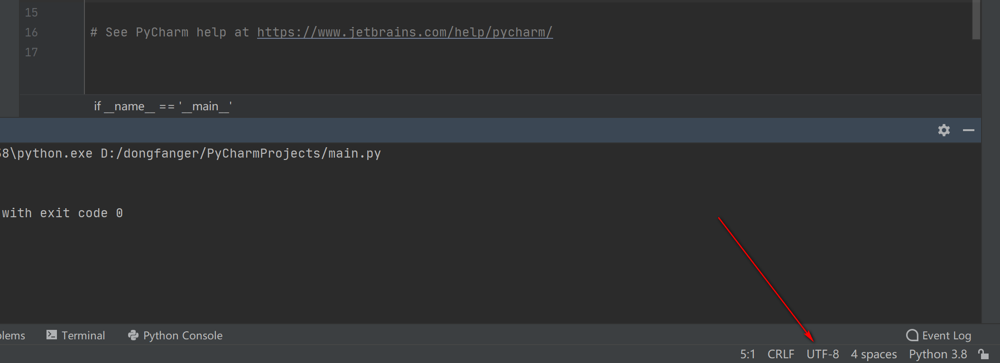
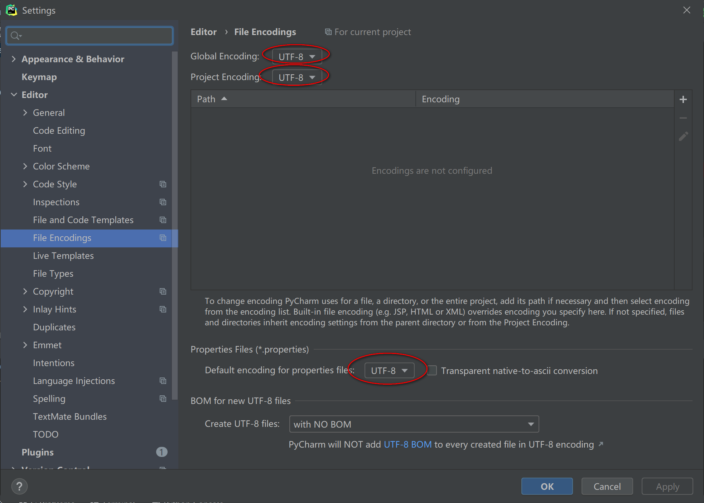
hello
开篇我们用的是 Python 自带的 IDLE，现在试试在 PyCharm 中 say hello。先在项目目录中右键创建 .py 文件：
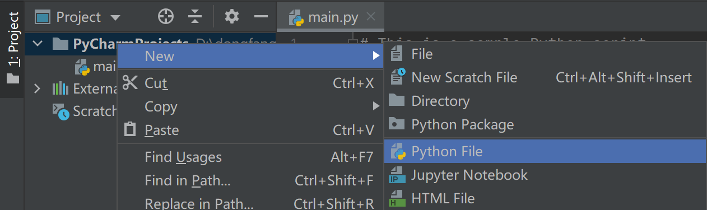
输入代码：
print("hello")
在代码编辑器任意位置右键 Run：
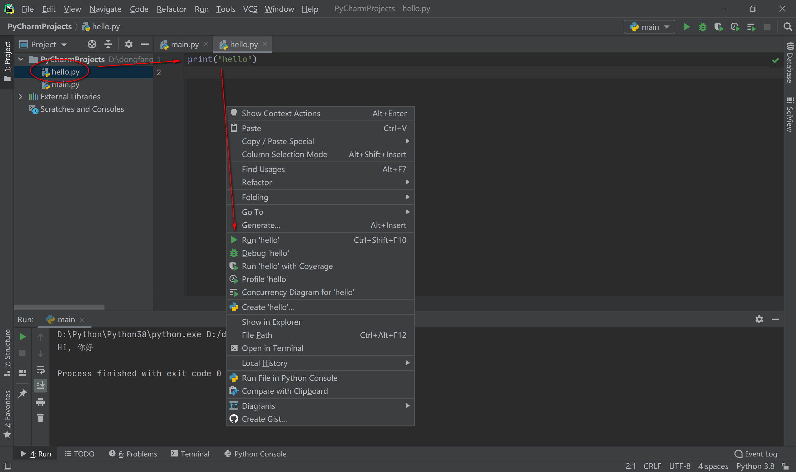
Python 同样会回应一句 hello：
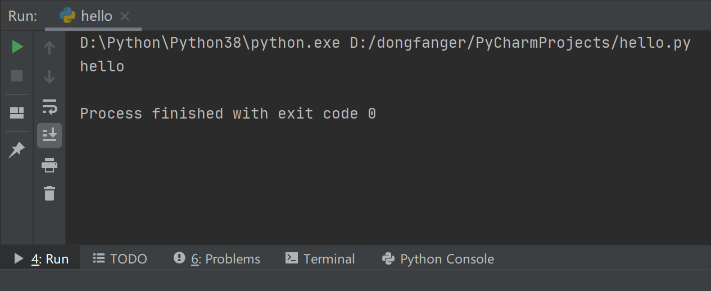
没错，是的，你已经会用 PyCharm 写 Python 了！
小结
本文介绍了 PyCharm 的基本使用，更多技巧请阅读知乎问答 你有哪些想要分享的 PyCharm 使用技巧？，比我写的好太多了。如果使用过程中遇到问题，百度一般能搜出来答案。不行的话就找 Google，安装浏览器插件 ghelper 即可访问，谷歌浏览器和火狐浏览器都支持。还解决不了，有一个办法，就是加入我们的高质量核心交流“Python互助讨论群”，技术面前无大佬，无惧提问，我们都是一群相互取暖的小白，交流经验，共同进步，每周六分享PyCharm使用技巧等知识点，每周日一起刷LeetCode编程题。公众号后台回复”加群“即可。